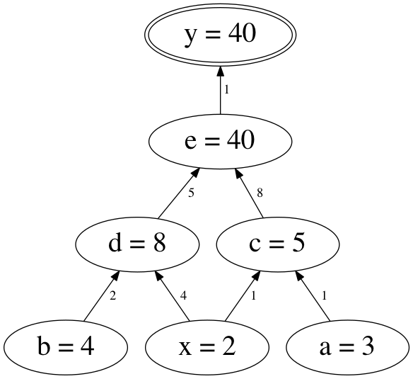

自動微分で遊ぼう
@rydotyosh / Ryogo Yoshimura
2016.07.23
自己紹介
- なまえ
@rydotyosh  / Ryogo Yoshimura
/ Ryogo Yoshimura
- しゅみ
幾何学, 微分, プログラミング
- おしごと
CAD/CAM やさん
CAD/CAM
- CAD: 機械部品とかをモデリングする
- CAM: 工作機械の最適な動作を計算する
- 曲面とか曲線とか微分とか出てくる

https://www.cgsys.co.jp/g/products/CAM-TOOL/3dcam_cl.htm
自動微分とは
- プログラムで書かれた関数から
合成関数の微分規則を使って
導関数の値を求める方法
#とは
もくじ
- 微分
- プログラムで書かれた関数
- 自動微分
- Adept の紹介
- Boost と組み合わせてみる
- 感想
微分
- 関数 \(f(x)\) の入力 \(x\) を少し変えたときに
出力がどれぐらい変わるか
- 傾き \(\frac{df}{dx} = \lim_{h \to 0} \frac{f(x+h) - f(x)}{h}\)

https://en.wikipedia.org/wiki/Derivative
偏微分
- 多変数関数 \(f(x_0, ..., x_n)\) のときに
1つの変数 \(x_i\) を選んで変化させ
他の変数は固定する
- 勾配 は各変数での偏導関数を並べたもの
http://en.wikipedia.org/wiki/Gradient
微分, 導関数
- 微分:
元の関数 \(f\) から 傾きを表す関数 \(\frac{df}{dx}\) を求める操作
- 導関数:
元の関数 \(f\) の傾きを表す関数 \(\frac{df}{dx}\)
利用場面
- シミュレーション, 最適化, 機械学習, ..., etc.
ある点にいるときに勾配を求めて
誤差が少ないほうに進む
- モデルを表す関数を書いたら
導関数はコンピュータで自動的に求めてほしい
コンピュータで計算する微分
- 数式微分
関数に数式処理をして導関数を求める
計算に比較的時間がかかる
- 数値微分
関数の値を数値的に求めて導関数の値を近似する
浮動小数点誤差の影響が大きい
- 自動微分
数式微分と数値微分の中間的な方法
関数の値と導関数の値を求める
合成関数の微分規則を使う
微分の記法
- ラグランジュの記法
\(f^\prime\)
- ライプニッツの記法
\(\frac{df}{dx}\)
\(\frac{\partial f}{\partial x}\) (偏導関数)
- 合成関数の微分規則を書くのにべんりなため
以降では主にライプニッツの記法(\(\frac{df}{dx}\))を使う
合成関数
- \(f(g(x))\)
- 例
\(f(g)=g^2\)
\(g(x)=x+3\)
\(f(g(x)) = (x+3)^2\)
合成関数の微分
- \(f(g(x))\)
\(\frac{df}{dx} = \frac{df}{dg} \cdot \frac{dg}{dx}\)
- それぞれの導関数の積になる
- 見た目がすごく約分っぽい
- もっと合成すると積がつながっていく
- \(f(g(h(x)))\)
\(\frac{df}{dx} = \frac{df}{dg} \cdot \frac{dg}{dh} \cdot \frac{dh}{dx}\)
- 連鎖律という
例 | 合成関数の微分
- \(f(g(x))\)
\(\frac{df}{dx} = \frac{df}{dg} \cdot \frac{dg}{dx}\)
- 例
\[
\begin{array}{ll}
f(g)=g^2, & \class{mathbg-r}{\frac{df}{dg}(g)=2g} \\
\class{mathbg-y}{g(x)=x+3}, & \class{mathbg-g}{\frac{dg}{dx}(x)=1} \\
\end{array} \\
\begin{align}
\textstyle \frac{df}{dx}(x)
& = \textstyle \class{mathbg-r}{\frac{df}{dg}(\class{mathbg-y}{g(x)})} \cdot \class{mathbg-g}{\frac{dg}{dx}(x)} \\
& = \class{mathbg-r}{(2 \class{mathbg-y}{(x+3)})} \cdot \class{mathbg-g}{(1)} \\
& = 2x + 6 \\
\end{align}
\]
多変数 | 合成関数の微分
- \(f(g(x), h(x))\)
\(\frac{df}{dx} = \frac{\partial f}{\partial g} \cdot \frac{dg}{dx} + \frac{\partial f}{\partial h} \cdot \frac{dh}{dx}\)
- 偏導関数のそれぞれの変数について和になる
- 変数の個所に代入されている関数について積になる
- もっと多変数でも同様
- \(f(g(x, y), h(x, y), u(x, y))\)
\(\frac{\partial f}{\partial x} = \frac{\partial f}{\partial g} \cdot \frac{\partial g}{\partial x} + \frac{\partial f}{\partial h} \cdot \frac{\partial h}{\partial x} + \frac{\partial f}{\partial u} \cdot \frac{\partial u}{\partial x}\)
\(\frac{\partial f}{\partial y} = \frac{\partial f}{\partial g} \cdot \frac{\partial g}{\partial y} + \frac{\partial f}{\partial h} \cdot \frac{\partial h}{\partial y} + \frac{\partial f}{\partial u} \cdot \frac{\partial u}{\partial y}\)
多変数の例 | 合成関数の微分
- \(f(g(x), h(x))\)
- 例
\[
\begin{array}{ll}
f(g, h)=g \cdot h, & \class{mathbg-r}{\frac{\partial f}{\partial g}(g, h)=h},
& \class{mathbg-c}{\frac{\partial f}{\partial h}(g, h)=g} \\
\class{mathbg-y}{g(x)=x+3}, & \class{mathbg-g}{\frac{dg}{dx}(x)=1} \\
\class{mathbg-b}{h(x)=4 \cdot x}, & \class{mathbg-m}{\frac{dh}{dx}(x)=4} \\
\end{array} \\
\begin{align}
\textstyle \frac{df}{dx}(x)
& = \textstyle \class{mathbg-r}{\frac{\partial f}{\partial g}(\class{mathbg-y}{g(x)}, \class{mathbg-b}{h(x)})} \cdot \class{mathbg-g}{\frac{dg}{dx}(x)} + \\
& \hspace{3ex} \textstyle \class{mathbg-c}{\frac{\partial f}{\partial h}(\class{mathbg-y}{g(x)}, \class{mathbg-b}{h(x)})} \cdot \class{mathbg-m}{\frac{dh}{dx}(x)} \\
& = \class{mathbg-b}{(4 \cdot x)} \cdot \class{mathbg-g}{(1)} + \class{mathbg-y}{(x+3)} \cdot \class{mathbg-m}{(4)} \\
& = 8x + 12 \\
\end{align}
\]
計算グラフ
- 合成関数の計算過程を表した 閉路のない有向グラフ
- 下から上に向かって計算が進む
- 変数・定数は節, 引数は辺 に対応
- 例 \(y = (x+3) \cdot (4 \cdot x)\)

微分 | 計算グラフ
- \(f(g(x))\) とその導関数
- 縦につながっているものは積で計算
\(\frac{df}{dx} = \frac{df}{dg} \cdot \frac{dg}{dx}\)
- 鎖線は導関数を計算したもので
直接つながっているわけではない

多変数 | 計算グラフ
- \(f(g(x),h(x))\) とその導関数
- 縦につながっているものは積で計算
- 横に並んでいるものは和で計算
\(\frac{df}{dx} = \frac{\partial f}{\partial g} \cdot \frac{dg}{dx} + \frac{\partial f}{\partial h} \cdot \frac{dh}{dx}\)
プログラムで書かれた関数
- 入力に対して出力が決まる
- 以降では
double の配列(的なもの)を
入出力と考える
std::vector<double> f(
const std::vector<double> &x );
- 四則演算 (
+, -, *, / )
- 初等関数 (
exp, sin, cos, ... )
- 条件演算子/制御文 (
?:, if, for, ... )
- 再代入
制御文 | プログラムで書かれた関数
- 制御文があると
場合によって計算過程が変わる
- 実際に通った計算過程をもとに微分する
if ( x > 0 )
y = x;
else
y = -x;
- 上の例は
> にするか >= にするかで
x == 0 のときの y の値は同じだが
導関数の値は異なってくる
再代入 | プログラムで書かれた関数
- 再代入は計算過程上では別の変数と考える
- 実際にはメモリ上に保存しておかなくて
よい場合もある
const教では背信行為
自動微分
- プログラムで書かれた関数を
四則演算, 初等関数 を合成した関数とみなす
- 合成関数の微分を適用
- 自動微分用の型を作り
四則演算, 初等関数 をオーバーロード
- 2種類の方法
概要 1/2 | ボトムアップ型
- 計算グラフを下からたどるのでボトムアップ
- \(f(g(h(x)))\) があったときに
\(\frac{dh}{dx}\), \(\frac{dg}{dx}\), \(\frac{df}{dx}\) と順に求まるイメージ

概要 2/2 | ボトムアップ型
- 微分する入力変数を1個指定する
- 関数の値と導関数の値を同時に計算していく
- 最終的に関数の値と
指定した変数での導関数の値が求まる
オーバーロード | ボトムアップ型
- 関数の値と導関数の値を \([ f, \frac{df}{dx} ]\) と括弧表記する
- 和 \([ f, \frac{df}{dx} ] + [ g, \frac{dg}{dx} ] = [ f + g, \frac{df}{dx} + \frac{dg}{dx} ]\)
- 積 \([ f, \frac{df}{dx} ] \cdot [ g, \frac{dg}{dx} ] = [ f \cdot g, g \cdot \frac{df}{dx} + f \cdot \frac{dg}{dx} ]\)
計算グラフ | ボトムアップ型
- 例
\(y = (x+a) \cdot (b \cdot x)\)
\(x = 2, \hspace{1ex} a = 3, \hspace{1ex} b = 4\)
例 1/6 | ボトムアップ型
- \(y = (x+a) \cdot (b \cdot x)\)
\(x = 2, \hspace{1ex} a = 3, \hspace{1ex} b = 4\)
- 微分する変数: \(x\)
導関数の値は \(1\)
\(x \to [2,1]\)
- 定数: \(a\), \(b\)
導関数の値は \(0\)
\(a \to [3,0]\), \(b \to [4,0]\)
例 2/6 | ボトムアップ型
- \(y = (\class{mathbg-r}{x}+\class{mathbg-g}{a}) \cdot (\class{mathbg-y}{b} \cdot \class{mathbg-r}{x})\)
\(\class{mathbg-r}{x = 2}, \hspace{1ex} \class{mathbg-g}{a = 3}, \hspace{1ex} \class{mathbg-y}{b = 4}\)
\(\class{mathbg-r}{x \to [2,1]}, \hspace{1ex} \class{mathbg-g}{a \to [3,0]}, \hspace{1ex} \class{mathbg-y}{b \to [4,0]}\)
\[
\begin{align}
\textstyle [y, \frac{dy}{dx}]
& = (\class{mathbg-r}{[2,1]}+\class{mathbg-g}{[3,0]}) \cdot (\class{mathbg-y}{[4,0]}\cdot\class{mathbg-r}{[2,1]}) \\
\end{align}
\]
- 関数の値と導関数の値を代入
例 3/6 | ボトムアップ型
- \(y = (x+a) \cdot (b \cdot x)\)
\(x = 2, \hspace{1ex} a = 3, \hspace{1ex} b = 4\)
\[
\begin{align}
\textstyle [y, \frac{dy}{dx}]
& = ([\class{mathbg-r}{2},\class{mathbg-y}{1}]+[\class{mathbg-b}{3},\class{mathbg-g}{0}]) \cdot ([4,0]\cdot[2,1]) \\
& = [\class{mathbg-r}{2}+\class{mathbg-b}{3},\class{mathbg-y}{1}+\class{mathbg-g}{0}] \cdot ([4,0]\cdot[2,1]) \\
& = [5,1] \cdot ([4,0]\cdot[2,1]) \\
\end{align}
\]
- 和を適用
\([ \class{mathbg-r}{f}, \class{mathbg-y}{\frac{df}{dx}} ] + [ \class{mathbg-b}{g}, \class{mathbg-g}{\frac{dg}{dx}} ] = [ \class{mathbg-r}{f} + \class{mathbg-b}{g}, \class{mathbg-y}{\frac{df}{dx}} + \class{mathbg-g}{\frac{dg}{dx}} ]\)
例 4/6 | ボトムアップ型
- \(y = (x+a) \cdot (b \cdot x)\)
\(x = 2, \hspace{1ex} a = 3, \hspace{1ex} b = 4\)
\[
\begin{align}
\textstyle [y, \frac{dy}{dx}]
& = ([2,1]+[3,0]) \cdot ([4,0]\cdot[2,1]) \\
& = [5,1] \cdot ([\class{mathbg-r}{4},\class{mathbg-y}{0}]\cdot[\class{mathbg-b}{2},\class{mathbg-g}{1}]) \\
& = [5,1] \cdot [\class{mathbg-r}{4} \cdot \class{mathbg-b}{2}, \class{mathbg-b}{2} \cdot \class{mathbg-y}{0} + \class{mathbg-r}{4} \cdot \class{mathbg-g}{1}] \\
& = [5,1] \cdot [8,4] \\
\end{align}
\]
- 積を適用
\([ \class{mathbg-r}{f}, \class{mathbg-y}{\frac{df}{dx}} ] \cdot [ \class{mathbg-b}{g}, \class{mathbg-g}{\frac{dg}{dx}} ] = [ \class{mathbg-r}{f} \cdot \class{mathbg-b}{g}, \class{mathbg-b}{g} \cdot \class{mathbg-y}{\frac{df}{dx}} + \class{mathbg-r}{f} \cdot \class{mathbg-g}{\frac{dg}{dx}} ]\)
例 5/6 | ボトムアップ型
- \(y = (x+a) \cdot (b \cdot x)\)
\(x = 2, \hspace{1ex} a = 3, \hspace{1ex} b = 4\)
\[
\begin{align}
\textstyle [y, \frac{dy}{dx}]
& = ([2,1]+[3,0]) \cdot ([4,0]\cdot[2,1]) \\
& = [5,1] \cdot ([4,0]\cdot[2,1]) \\
& = [\class{mathbg-r}{5},\class{mathbg-y}{1}] \cdot [\class{mathbg-b}{8},\class{mathbg-g}{4}] \\
& = [\class{mathbg-r}{5} \cdot \class{mathbg-b}{8}, \class{mathbg-b}{8} \cdot \class{mathbg-y}{1} + \class{mathbg-r}{5} \cdot \class{mathbg-g}{4}] \\
& = [40,28] \\
\end{align}
\]
- 積を適用
\([ \class{mathbg-r}{f}, \class{mathbg-y}{\frac{df}{dx}} ] \cdot [ \class{mathbg-b}{g}, \class{mathbg-g}{\frac{dg}{dx}} ] = [ \class{mathbg-r}{f} \cdot \class{mathbg-b}{g}, \class{mathbg-b}{g} \cdot \class{mathbg-y}{\frac{df}{dx}} + \class{mathbg-r}{f} \cdot \class{mathbg-g}{\frac{dg}{dx}} ]\)
例 6/6 | ボトムアップ型
- \(y = (x+a) \cdot (b \cdot x)\)
\(x = 2, \hspace{1ex} a = 3, \hspace{1ex} b = 4\)
\[
\begin{align}
\textstyle [y, \frac{dy}{dx}]
& = ([2,1]+[3,0]) \cdot ([4,0]\cdot[2,1]) \\
& = [5,1] \cdot ([4,0]\cdot[2,1]) \\
& = [5,1] \cdot [8,4] \\
& = [40,28] \\
\end{align}
\]
- できあがり
- cf. \(\frac{dy}{dx}=8x+12=28\)
実装例 | ボトムアップ型
#include <iostream>
struct ad { double x, dx; };
ad operator+( const ad &f, const ad &g ) {
return ad{ f.x + g.x, f.dx + g.dx };
}
ad operator*( const ad &f, const ad &g ) {
return ad{ f.x * g.x, g.x * f.dx + f.x * g.dx };
}
int main() {
ad x{ 2, 1 }, a{ 3, 0 }, b{ 4, 0 };
ad y = ( x + a ) * ( b * x );
std::cout << y.x << "," <<
y.dx << std::endl;
}
// --> 40,28
1変数まとめ | ボトムアップ型
- 1変数の場合はすごくかんたん
あとは対応するオーバーロードを増やすだけ
- 多変数の場合?
多変数 | ボトムアップ型
- 多変数の場合 \(f(x_0, x_1, ..., x_n)\)
- それぞれの変数で偏導関数の値を \(1\) にして毎回計算する
\([f, \frac{\partial f}{\partial x_0}], [f, \frac{\partial f}{\partial x_1}], ..., [f, \frac{\partial f}{\partial x_n}]\)
- もしくは偏導関数の値を並べて同時に計算する
\([f, \frac{\partial f}{\partial x_0}, \frac{\partial f}{\partial x_1}, ..., \frac{\partial f}{\partial x_n}]\)
- どちらも無駄な計算が多い
- 入力変数→少, 出力変数→多 というケースでは有効
- そこでトップダウン型自動微分
概要 1/3 | トップダウン型
- 計算グラフを上からたどるのでトップダウン
- \(f(g(h(x)))\) があったときに
\(\frac{df}{dg}\), \(\frac{df}{dh}\), \(\frac{df}{dx}\) の順 (左下図)
- cf. ボトムアップの場合は
\(\frac{dh}{dx}\), \(\frac{dg}{dx}\), \(\frac{df}{dx}\) の順 (右下図)

概要 2/3 | トップダウン型
- 微分する出力変数を1個指定する
- 計算過程を全部覚えておく
- 関数の値を求め終わったら計算過程を逆にたどる
- 最終的に関数の値と
すべての変数での偏導関数の値が求まる

概要 3/3 | トップダウン型
- 下図で \(v\) はどこで何個使われているかは分からない
- \(\frac{\partial f}{\partial v}\) は横に並んでいるので和を取ればよい
- 各変数 \(v_i\) に \(\frac{\partial f}{\partial v_i}\) を覚えておく領域をとっておき
\(v_i\) が使われたらその領域に加算する
計算グラフ | トップダウン型
- 例
\(y = (x+a) \cdot (b \cdot x)\)
\(x = 2, \hspace{1ex} a = 3, \hspace{1ex} b = 4\)

例 1/11 | トップダウン型
- \(y = (x+a) \cdot (b \cdot x)\)
\(x = 2, \hspace{1ex} a = 3, \hspace{1ex} b = 4\)
- 微分する変数: \(y\)
導関数の値を \(1\) とする (\(\frac{\partial y}{\partial y}=1\))
- 各演算に中間変数名をふる
\(c = x + a\)
\(d = b \cdot x\)
\(e = c \cdot d\)
\(y = e\)
- 導関数の値を覚えておく領域を \(S(v)\) で参照する
例 2/11 | トップダウン型
- \(y = (x+a) \cdot (b \cdot x)\)
\(x = 2, \hspace{1ex} a = 3, \hspace{1ex} b = 4\)
\(c = 5, \hspace{1ex} d = 8, \hspace{1ex} e = 40\)
\(y = 40\)
- 関数の値を全部計算
例 3/11 | トップダウン型
- \(y = (x+a) \cdot (b \cdot x)\)
\(x = 2, \hspace{1ex} a = 3, \hspace{1ex} b = 4\)
\(S(y) \leftarrow 1\)
\(S(a), ..., S(e) \leftarrow 0\)
- 導関数の値を初期化
例 4/11 | トップダウン型
- \(y = (x+a) \cdot (b \cdot x)\)
\(x = 2, \hspace{1ex} a = 3, \hspace{1ex} b = 4\)
\(S(y) = 1\)
\(S(e) \leftarrow S(e) + S(y) \cdot \frac{\partial y}{\partial e} = 0 + 1 \cdot 1 = 1\)
- \(e \leftarrow y\) を計算
例 5/11 | トップダウン型
- \(y = (x+a) \cdot (b \cdot x)\)
\(x = 2, \hspace{1ex} a = 3, \hspace{1ex} b = 4\)
\(S(y) = 1\)
\(S(e) = 1\)
\(S(d) \leftarrow S(d) + S(e) \cdot \frac{\partial e}{\partial d} = 0 + 1 \cdot 5 = 5\)
- \(d \leftarrow e\) を計算
例 6/11 | トップダウン型
- \(y = (x+a) \cdot (b \cdot x)\)
\(x = 2, \hspace{1ex} a = 3, \hspace{1ex} b = 4\)
\(S(y) = 1\)
\(S(e) = 1\)
\(S(d) = 5\)
\(S(c) \leftarrow S(c) + S(e) \cdot \frac{\partial e}{\partial c} = 0 + 1 \cdot 8 = 8\)
- \(c \leftarrow e\) を計算
例 7/11 | トップダウン型
- \(y = (x+a) \cdot (b \cdot x)\)
\(x = 2, \hspace{1ex} a = 3, \hspace{1ex} b = 4\)
\(S(y) = 1\)
\(S(e) = 1\)
\(S(d) = 5\)
\(S(c) = 8\)
\(S(b) \leftarrow S(b) + S(d) \cdot \frac{\partial d}{\partial b} = 0 + 5 \cdot 2 = 10\)
- \(b \leftarrow d\) を計算
例 8/11 | トップダウン型
- \(y = (x+a) \cdot (b \cdot x)\)
\(x = 2, \hspace{1ex} a = 3, \hspace{1ex} b = 4\)
\(S(y) = 1\)
\(S(e) = 1\)
\(S(d) = 5\)
\(S(c) = 8\)
\(S(b) = 10\)
\(S(x) \leftarrow S(x) + S(d) \cdot \frac{\partial d}{\partial x} = 0 + 5 \cdot 4 = 20\)
- \(x \leftarrow d\) を計算
例 9/11 | トップダウン型
- \(y = (x+a) \cdot (b \cdot x)\)
\(x = 2, \hspace{1ex} a = 3, \hspace{1ex} b = 4\)
\(S(y) = 1\)
\(S(e) = 1\)
\(S(d) = 5\)
\(S(c) = 8\)
\(S(b) = 10\)
\(S(x) = 20\)
\(S(x) \leftarrow S(x) + S(c) \cdot \frac{\partial c}{\partial x} = 20 + 8 \cdot 1 = 28\)
- \(x \leftarrow c\) を計算
例 10/11 | トップダウン型
- \(y = (x+a) \cdot (b \cdot x)\)
\(x = 2, \hspace{1ex} a = 3, \hspace{1ex} b = 4\)
\(S(y) = 1\)
\(S(e) = 1\)
\(S(d) = 5\)
\(S(c) = 8\)
\(S(b) = 10\)
\(S(x) = 28\)
\(S(a) \leftarrow S(a) + S(c) \cdot \frac{\partial c}{\partial a} = 0 + 8 \cdot 1 = 8\)
- \(a \leftarrow c\) を計算
例 11/11 | トップダウン型
- \(y = (x+a) \cdot (b \cdot x)\)
\(x = 2, \hspace{1ex} a = 3, \hspace{1ex} b = 4\)
\(S(y) = \frac{\partial y}{\partial y} = 1\)
\(S(e) = \frac{\partial y}{\partial e} = 1\)
\(S(d) = \frac{\partial y}{\partial d} = 5\)
\(S(c) = \frac{\partial y}{\partial c} = 8\)
\(S(b) = \frac{\partial y}{\partial b} = 10\)
\(S(x) = \frac{\partial y}{\partial x} = 28\)
\(S(a) = \frac{\partial y}{\partial a} = 8\)
- できあがり
まとめ | トップダウン型
- 多変数関数の偏導関数がぜんぶ求まる
- 入力変数→多, 出力変数→少 というケースで有効
- べんり
- 実装はちょっとめんどくさそう
自動微分ができるC++ライブラリ
- いろいろある
- ADOL-C
- CppAD
- TensorFlow
- Adept
- 今回は Adept を紹介
Adept の紹介
- http://www.met.rdg.ac.uk/clouds/adept/
- あでぷと[要出典]
- 自動微分 を求めるライブラリ
- コードが短い (3000行ぐらい)
- 式テンプレート を使っている
- OpenMP 版もある
- Boost には入ってない
式テンプレート
- 自動微分用の型
adept::adouble
- オーバーロードで
式を表す型 adept::Expression を返すようにする
- コンパイル時に計算し
覚えておく必要のある中間変数を最小限にする
使ってみる
#include <iostream>
#include "adept/adept.h"
int main() {
adept::Stack stack; // 導関数の情報を格納するオブジェクト
adept::adouble x = 2; // 入力変数
stack.new_recording(); // アルゴリズムの記録を開始
adept::adouble y =
( x + 3 ) * ( 4 * x ); // アルゴリズムを実行
y.set_gradient( 1.0 ); // 出力変数の勾配を設定
stack.reverse(); // トップダウン型自動微分を実行
std::cout << y.value() << "," << // 出力変数の値
x.get_gradient() << // 導関数の値
std::endl;
}
// --> 40,28
Boost と組み合わせてみる
※ 思いついた順
- special_functions
- odeint
- accumulators
- ublas
Adept x Boost.special_functions
- 特殊関数
- C++1z で一部が std に入る
- std では
float, double, long double だが
boost では template<class T>
Adept x Boost.special_functions
- なんかうまくいかない ><
- 関数が足りない
ceil, floor
- numeric_limits
- ETが邪魔
T( ( cond ) ? z : -z )
- 結局断念 ;;
Adept x Boost.odeint
- 微分方程式
Value, Time の型を adept::adouble にするとできる- テンプレート力高い
- 微分仲間ということで あとでもうちょっと遊ぶ
Adept x Boost.accumulators
- 統計処理
sum はできるmedian, min はコンパイルエラーmean は通るがなぜか落ちる ><- 結局断念 ;;
Adept x Odeint
- 微分仲間ということで もうちょっと遊ぶ
- 物理現象の観測データ(ぽいもの)から
シミュレーションの初期条件を推定してみる
天体の動き | Adept x Odeint
- 微分方程式
\(x^\prime = u, u^\prime = -\frac{mx}{(x^2+y^2)^{3/2}}\)
\(y^\prime = v, v^\prime = -\frac{my}{(x^2+y^2)^{3/2}}\)
- 初期条件
座標 \(x(0) = 3.0, \hspace{1ex} y(0) = 0.0\)
速度 \(u(0) = 0.3, \hspace{1ex} v(0) = 0.2\)
- 定数
太陽の質量 \(m = 1.0\)
初期条件 | Adept x Odeint
std::vector< double > init {
/*x =*/ 3.0, /*y =*/ 0.0, // 座標
/*u =*/ 0.3, /*v =*/ 0.2, // 速度
/*m =*/ 1.0 // 太陽の質量
};
微分方程式 | Adept x Odeint
template< class T >
std::vector< T > simulate( const std::vector< T > &init ) {
using namespace boost::numeric;
typedef std::array< T, 4 > state_t;
state_t x0 { init[ 0 ], init[ 1 ], init[ 2 ], init[ 3 ] };
T m = init[ 4 ];
auto system = [&]( const state_t &x,
state_t &dxdt, T /*t*/ ) { // 微分方程式を書く
dxdt[ 0 ] = x[ 2 ]; // u`
dxdt[ 1 ] = x[ 3 ]; // v`
T r2 = x[ 0 ] * x[ 0 ] + x[ 1 ] * x[ 1 ];
T r3 = pow( r2, 3.0 / 2.0 ) * m;
dxdt[ 2 ] = -x[ 0 ] / r3; // x`
dxdt[ 3 ] = -x[ 1 ] / r3; // y`
};
...
軌道を求める | Adept x Odeint
template< class T >
std::vector< T > simulate( const std::vector< T > &init ) {
...
auto stepper =
odeint::controlled_runge_kutta<
odeint::runge_kutta_dopri5< state_t, T > >();
std::vector< T > orbit; // 軌道保存用
auto observer = [&]( const state_t &x, T /*t*/ ) {
orbit.push_back( x[ 0 ] );
orbit.push_back( x[ 1 ] );
};
T t0 = 0.0, t1 = 15.0, dt = 0.1;
odeint::integrate_const( // 軌道計算する
stepper, system, x0, t0, t1, dt, observer );
return orbit;
}
軌道を求める | Adept x Odeint
int main() {
std::vector< double > init {
/*x =*/ 3.0, /*y =*/ 0.0, // 座標
/*u =*/ 0.3, /*v =*/ 0.2, // 速度
/*m =*/ 1.0 // 太陽の質量
};
std::vector< double > orbit = simulate( init );
...
軌道を求める | Adept x Odeint

観測データっぽく | Adept x Odeint
...
std::vector< double > observed = orbit;
std::mt19937 gen( 0 );
std::normal_distribution<> d( 0, 0.05 );
for ( double &x : observed ) {
x += d( gen );
}
...
観測データっぽく | Adept x Odeint

- これを観測データとする
- 以降では元の軌道は知らないことにする
テキトーな初期条件 | Adept x Odeint
- 初期条件の 位置, 速度, 太陽の質量 を推定してみる
- 目分量でテキトーな初期条件を入れる
...
std::vector< double > init {
/*x =*/ observed[0], /*y =*/ observed[1],
/*u =*/ 0.4, /*v =*/ 0.3,
/*m =*/ 0.8
};
...
テキトーな初期条件 | Adept x Odeint

誤差 | Adept x Odeint
template< class T >
T error( const std::vector< T > &orbit,
const std::vector< double > &observed ) {
size_t n = orbit.size();
T sum_sqr = 0.0;
for ( size_t i = 0; i < n; ++i ) {
T dv = orbit[ i ] - observed[ i ];
sum_sqr += dv * dv;
}
return sum_sqr / n;
}
初期条件で微分 | Adept x Odeint
...
size_t dim = init.size();
adept::Stack stack;
std::vector< adept::adouble > init_( dim ); // 入力変数
for ( size_t i = 0; i < dim; ++i )
init_[ i ] = init[ i ];
stack.new_recording(); // アルゴリズムの記録を開始
std::vector< adept::adouble > orbit_ = simulate( init_ );
adept::adouble err_ = error( orbit_, observed ); // 誤差値
err_.set_gradient( 1.0 ); // 出力変数(誤差値)の勾配を設定
stack.reverse(); // トップダウン型自動微分を実行
std::vector< double > grad( dim );
for ( size_t i = 0; i < dim; ++i )
grad[ i ] = init_[ i ].get_gradient(); // 偏導関数の値
...
初期条件を変化 | Adept x Odeint
- 偏導関数の値にしたがって
誤差が小さくなる方へ初期条件を変化させる
...
adam( grad, init );
...
Adam法 | Adept x Odeint
struct adam {
...
void operator()( const std::vector< double > &dx,
std::vector< double > &x ) {
double t = static_cast<double>( ++k );
for ( size_t i = 0; i < dim; ++i ) {
m1[ i ] = beta1 * m1[ i ] + ( 1.0 - beta1 ) * dx[ i ];
m2[ i ] = beta2 * m2[ i ] + ( 1.0 - beta2 ) * dx[ i ] * dx[ i ];
double c1 = m1[ i ] / ( 1.0 - pow( beta1, t ) );
double c2 = m2[ i ] / ( 1.0 - pow( beta2, t ) );
x[ i ] -= alpha * c1 / ( sqrt( c2 ) + epsilon );
}
}
}
元の軌道と比較 | Adept x Odeint

誤差の推移 | Adept x Odeint

感想
- 自動微分はべんり
- 組み合わせるとそれぞれ地雷がある
- もうちょっと図示しやすい例にすればよかった
参考文献
- Robin J. Hogan. 2014. "Fast Reverse-Mode Automatic Differentiation using Expression Templates in C++". ACM Transactions on Mathematical Software, Vol. 40, No. 4, Article 26.
- 久保田光一, 伊理正夫. 1998. "アルゴリズムの自動微分と応用". コロナ社.
- επιστημη, 高橋 晶. 2014. "C++テンプレートテクニック 第2版". SBクリエイティブ.
- Diederik P. Kingma, Jimmy Lei Ba. 2015. "Adam: A Method for Stochastic Optimization". 3rd International Conference for Learning Representations.